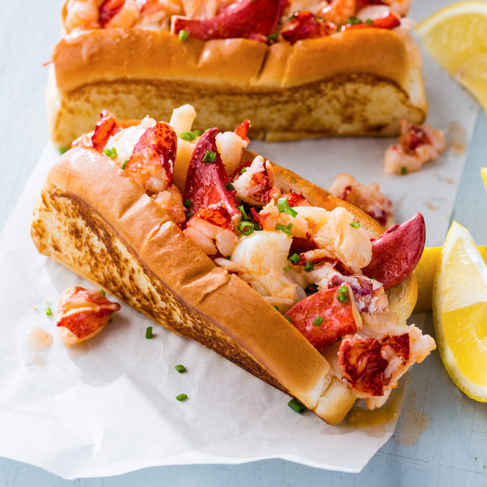

De top 5 beste Broodjes
"This is one of the more famous sandwiches straight out of the island of Cuba," says Pretty Pink Bullets. Load thinly-sliced ham, pork, Swiss cheese, and dill pickle slices into sweet rolls and heat in a sandwich press for crispy, melty perfection.
Chef John explains the brilliance of this Vietnamese sandwich: "Not only do we get amazing contrasts in flavor and texture, but also the temperature difference between the crisp, warm, meat-filled roll and the cool, crunchy vegetables makes this so much fun to eat. This isn't just one of the best sandwiches I've ever had, it's one of the best things, period."
It really doesn't get more American than a big, juicy burger, and recipe-reviewer Rico confirms that "this really is the best tasting hamburger ever!"

This classic New England sandwich is "best served on a regular ol' hot dog bun, which I prefer grilled," says naples34102. The only thing that'll keep you from making these every night is the price of lobster!
Recipe-reviewer cmastheryr got some tips from his "Philly Phriend" before making this sandwich: "I made six sandwiches. Two with provolone, two with mozzarella, and (Philly) two with cheeze whiz. Provolone and mozzarella were equal in outstanding taste. The cheeze whiz was good but not up to the others."